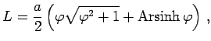

ARCHIMEDische Spirale heißt eine Kurve, die durch Bewegung eines Punktes mit konstanter Geschwindigkeit v auf einem Strahl entsteht, der seinerseits mit konstanter Winkelgeschwindigkeit  den Koordinatenursprung umkreist.
den Koordinatenursprung umkreist.
Die Gleichung der archimedischen Spirale lautet in Polarkoordinaten
| (2.236) |
Die Kurve besitzt zwei Zweige, die symmetrisch zur y-Achse verlaufen. Jeder Strahl 0K schneidet jeden der beiden Zweige in je einer Folge von Punkten die voneinander den Abstand haben.
Die Länge des Bogens ist  wobei für große  der Ausdruck gegen 1 geht.
der Ausdruck gegen 1 geht.
Der Flächeninhalt des Sektors P10P2 beträgt
Der Krümmungsradius ist und im Koordinatenursprung